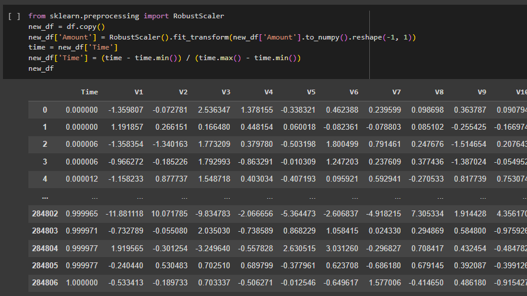
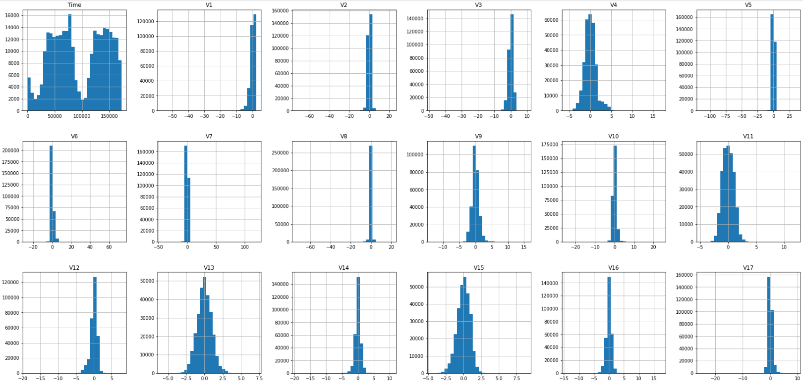
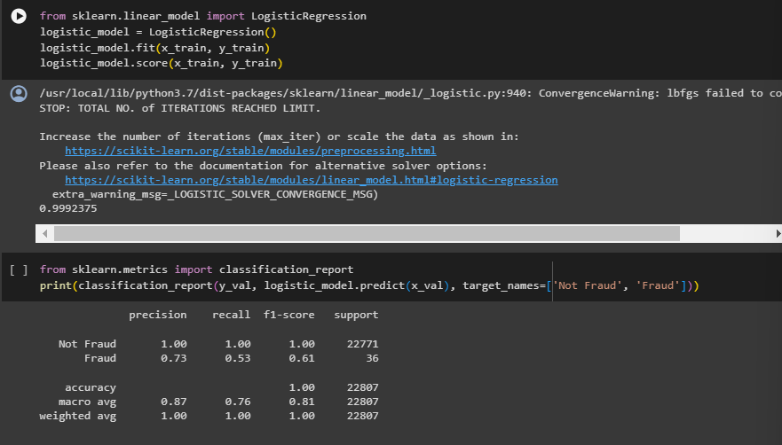
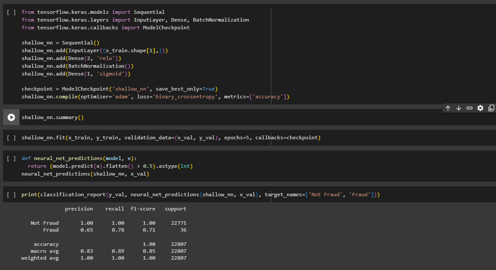
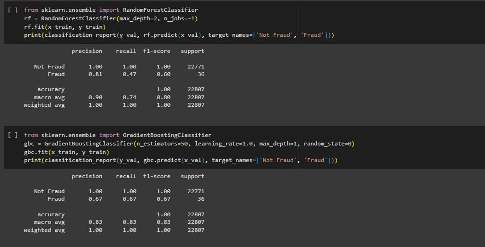
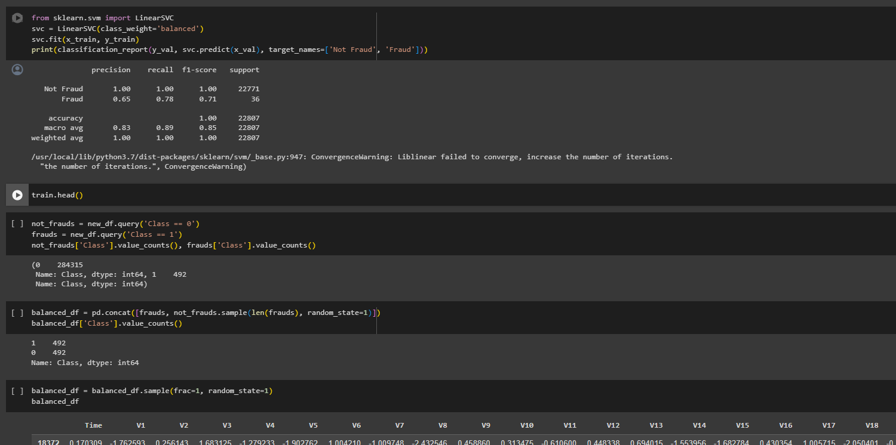

Projects
Credit Card Fraud ML
Portfolio
Credit Fraud Detection
Collaborator: Tochi Obinma
In this project, we explore a dataset from Kaggle consisting of 284,807 credit card transactions conducted over a two-day period in September 2013. The dataset is characterized by a significant class imbalance, with only 492 transactions identified as fraudulent, representing approximately 0.172% of the total transactions. The primary objective is to apply machine learning techniques to address fraud detection in credit card transactions.
Project Highlights...
Languages: Python, utilizing libraries such as pandas, scikit-learn, and TensorFlow for data manipulation, analysis, and model building
Jupyter Notebooks: Incorporated detailed code documentation within Jupyter Notebooks, enhancing project transparency and making it accessible for collaboration and future reference.
Imbalanced Dataset Handling: Effectively managed an imbalanced dataset with only 0.172% fraudulent transactions to ensure model robustness.
Model Variety: Implemented diverse models, including Logistic Regression, shallow neural networks, RandomForestClassifier, GradientBoostingClassifier, and LinearSVC.
Comprehensive Evaluation: Utilized thorough evaluation metrics, such as precision, recall, and F1-score, to assess and compare model performance.
Data Visualization: Employed data visualization techniques, including histograms and descriptive statistics, to gain insights into the dataset.
Step-by-Step Overview:
The project encompasses various steps, including loading and importing libraries, data preprocessing, analysis, and subsequent model building and evaluation. The primary model utilized is Logistic Regression, followed by the implementation of a shallow neural network, RandomForestClassifier, GradientBoostingClassifier, and LinearSVC. To address the class imbalance, a balanced dataset is created and used to train additional models. The project aims to compare the performance of different models in detecting fraudulent transactions and provide insights into the effectiveness of each approach.
- Data Preprocessing: Cleaned and prepared the dataset, handling outliers and normalizing features using techniques such as RobustScaler. Scales the 'Amount' and 'Time' features in the dataset using RobustScaler. The DataFrame is then shuffled, and the dataset is split into training, testing, and validation sets. 
- Exploratory Data Analysis: Read the CSV file into a Pandas DataFrame and stores it in the variable df. The subsequent lines display the DataFrame and show the class distribution using df['Class'].value_counts(). 
- Model Building - Logistic Regression: Applied Logistic Regression as the initial model for fraud detection. Evaluates its performance on the validation set. 
- Shallow Neural Network Implementation: Developed and trained a shallow neural network for a more intricate model. Defines a shallow neural network using Keras, compiles it, and trains it on the training set. Performance is monitored, and the best model is saved using a checkpoint. 
- Ensemble Model Building: Utilized RandomForestClassifier and GradientBoostingClassifier to explore ensemble learning approaches. 
- Class Imbalance Handling: Addressed class imbalance by creating a balanced dataset and training models on it. 
- Model Evaluation: Evaluated all models using comprehensive metrics and presented a detailed classification report.